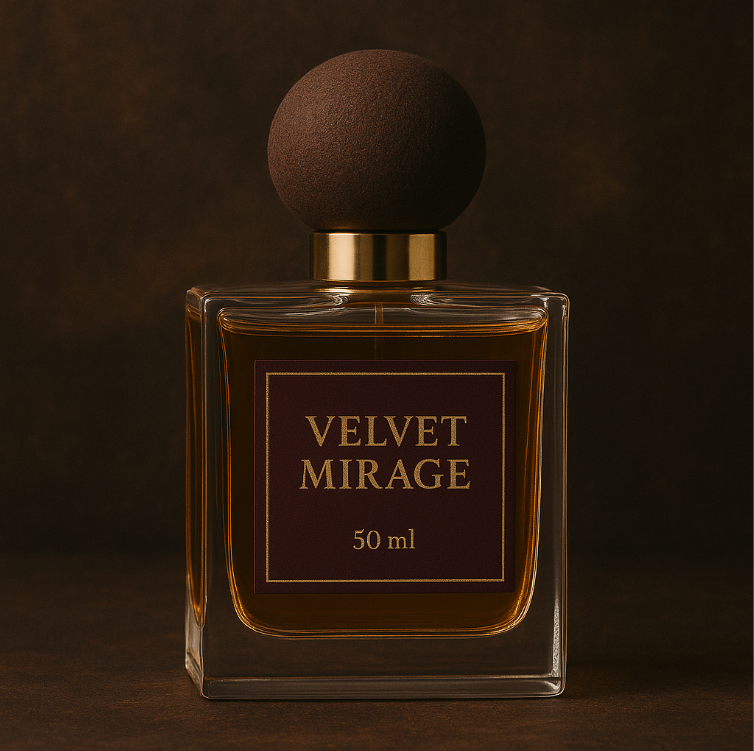

← Zurück zur Übersicht

Velvet Mirage
135CHF / 50 ml
Beschreibung
Velvet Mirage ist eine Reise in die Sinnlichkeit des Orients. Warme, umhüllende Noten verschmelzen zu einer luxuriösen Komposition, die wie eine sanfte Umarmung wirkt.
Duftnoten
Kopfnote: Kardamom, Safran, Rosa
Herznote: Oud, Damaszener Rose, Ylang-Ylang
Basisnote: Vanille, Sandelholz, Amber
Charakter
Sinnlich, warm, orientalisch